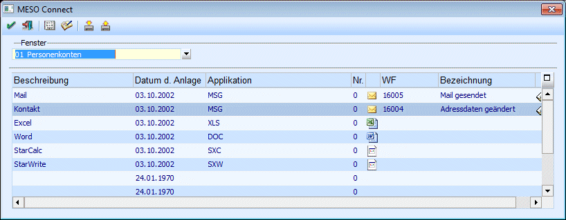

Für einige Datenbereiche der WinLine können eigene Scripts verwaltet werden, die spezielle Aufgabe wie z.B. Office-Anbindungen (Mail schreiben, Serienbrief erstellen, Kontaktadressen abgleichen) erledigen.
Die Verwaltung der Scripte erfolgt über den Menüpunkt
1 WinLine START
1 Parameter
1 MESO Connect

Aus der Auswahllistbox "Fenster" kann der Bereich ausgewählt werden, für den die Scripte gelten sollen. Diese Bereiche sind:
ü Kontakte
ü Personenkonten
ü Interessenten
ü Ansprechpartner
ü Vertreter
ü Lohn Österreich (AN-Stamm)
ü Lohn Deutschlang (AN-Stamm)
ü Namen suchen
ü Info
Nach Auswahl des Bereichs werden die bereits vorhandenen Scripte angezeigt, wobei je Bereich max. 10 Scripte verfügbar sind.
Zusätzlich zu den Scripts können folgende Informationen verwaltet werden:
Ø Applikation
Für die einzelnen Scripts besteht die Möglichkeit, individuelle Symbole zu hinterlegen, die dann in den sogenannten "Meso-Connect Auswahllistboxen" zusätzlich zum Script angezeigt werden, wobei es dafür 2 Varianten gibt:
ü Verknüpfung über
Programmaufruf
Dazu muss in der Spalte "Applikation" die gewünschte
Anwendungsdatei inkl. Pfad (z.B. C:\PROGRAMME\MICROSOFT
OFFICE\OFFICE\WINWORD.EXE) eingetragen werden, wofür es auch eine
Matchcode-Funktion gibt. Da die meisten Anwendungen mehrere Symbole zur
Verfügung stellen, besteht über die Spalte "Nr." nochmals die Möglichkeit, diese
verschiedenen Symbole zu selektieren. In der nachfolgenden Spalte wird das
ausgewählte Symbol angezeigt.
ü Verknüpfung über
Dateierweiterung
In diesem Fall wird in der Spalte "Applikation" nur die
Dateierweiterung angegeben, die das Script erzeugt z.B. XLS (für eine
Excel-Tabelle), DOC (für ein Word-Dokument), MSG (für ein Mail) etc. Das Script
sucht sich dann anhand der Systemeinstellung das dazugehörige Icon selbst, das
dann in der nachfolgenden Spalte angezeigt wird.
Ø WF
In diesem Feld kann ein Workflow (Startpunkt) oder ein Aktionsschritt hinterlegt werden, der dann beim Ausführen der Aktion abgearbeitet wird. Durch Drücken der F9-Taste kann nach allen bereits angelegten Workflows und Aktionsschritte gesucht werden.
Ø Bezeichnung
Hier wird die Bezeichnung des hinterlegten Workflow bzw. Aktionsschrittes angezeigt.
Derzeit sind folgende Scripts vorhanden, die für fast alle Datenbereiche funktionieren:
ü Mail
Mit diesem Script wird ein
neues Mail erstellt, wobei die Mail-Adresse aus dem Stammdatensatz übernommen
wird.
ü Kontakt
Mit diesem Script wird
der Datensatz als Kontakt an MS Outlook übergeben. Ist der Datensatz bereits
vorhanden, werden nur veränderte Daten übergeben. Bzw. wurden die Daten in
Outlook verändert, so werden die Veränderungen in die WinLine übernommen.
ü Excel
Der Datensatz wird in
eine MS Excel-Tabelle übergeben.
ü Word
Der Datensatz wird in ein
MS Word Dokument übergeben. Dabei ist darauf zu achten, dass auf die Vorlage,
mit dem das neue Dokument erstellt wird, zugegriffen werden kann. Dazu müssen
die Vorlagen MESO_FAX.DOT, MESO_TABELLE.DOT und MESO_TABLE.DOT im
Vorlagenverzeichnis von WINWORD vorhanden sein. Die Vorlagen finden Sie auf der
MESONIC-CD.
ü StarCalc
Der Datensatz wird im
Programm StarCalc (Open Office) geöffnet.
ü StarWrite
Der Datensatz wird in
ein StarWrite Dokument übergeben. Als Vorlagen können auch die WORD-Vorlagen
verwendet werden.
Für den Bereich "Namen suchen" hingegen gibt es andere Scripts, weil das "Namen suchen" auch mehrere Datensätze bearbeiten kann:
ü Mail
Mit diesem Script wird ein
neues Mail erstellt, wobei alle Mail-Adressen angesprochen werden, die im
Suchergebnis vorkommen.
ü Kontakt
Mit diesem Script
werden alle Datensätze der Tabelle als Kontakt an MS Outlook übergeben. Ist der
Datensatz bereits vorhanden, werden nur veränderte Daten übergeben. Bzw. wurden
die Daten in Outlook verändert, so werden die Veränderungen in die WinLine
übernommen.
ü Excel
Die Datensätze der
Tabelle werden in eine Tabelle von MS Excel übergeben.
ü Word-Fax
Die selektierten
Datensätze werden in MS Word übergeben, wobei für jeden Datensatz ein eigenes
Dokument erzeugt wird. Auch hier ist darauf zu achten, dass die entsprechenden
Vorlagen vorhanden sind.
ü Word-Tabelle
Die selektierten
Datensätze werden in MS Word übergeben, wobei alle Datensätze in einem Dokument
in einer Tabelle angelegt werden. Auch hier ist darauf zu achten, dass die
entsprechenden Vorlagen vorhanden sind.
ü StarCalc
Die ausgewählten
Datensätze werden im Programm StarCalc (StarOffice) geöffnet.
ü StarWrite
Die ausgewählten
Datensätze werden in ein StarWrite Dokument übergeben. Als Vorlagen können auch
die WORD-Vorlagen verwendet werden.
Nachfolgend finden Sie ein Liste von allen Variablen, die beim "Namen Suchen" über Meso-Connect angesprochen werden können:
ü 300 Selektiert
ü 301 Typ (Anzeige)
ü 302 Aktiv/Inaktiv
ü 303 Typ (Nummer)
ü 304 Key
ü 305 Anzahl Zeilen Gesamt
ü 306 Anzahl Zeilen Selektiert
ü 309 zu Handen
ü 310 Anrede
ü 311 Name 1 / Nachname
ü 312 Name 2 / Vorname
ü 313 Straße 1
ü 314 Straße 2
ü 315 Länderkennzeichen
ü 316 PLZ 1
ü 317 PLZ 2
ü 318 Ort
ü 319 Land
ü 320 eMail Adresse
ü 321 WWW Adresse
ü 322 Telefon 1
ü 323 Telefon 2
ü 324 Fax
ü 325 Mobil
ü 331 Datum Abgleich
ü 332 OutlookID
ü 333 Datum letzte Änderung
ü 340 Flag_SaveOutlookId (Set 1, Unset 0 )
ü 345 Briefanrede (nur bei Kontakten bzw. Ansprechpartner)
ü 346 Funktion (nur bei Kontakten bzw. Ansprechpartner)
ü 347 Titel (nur bei Kontakten bzw. Ansprechpartner)
ü 348 Abteilung (nur bei Kontakten bzw. Ansprechpartner)
ü 372 Kontonummer
Wenn es sich bei den gefundenen Datensätzen um Ansprechpartner von Personenkonten handelt, gibt es noch zusätzlich folgende Variablen, in denen die Daten des Personenkontos enthalten sind:
308 Firmenname
360 Name2
361 Anrede
362 zu Handen
363 Strasse
364 Strasse2
365 PLZ
366 PLZ2
367 Ort
368 Land
369 EMail
370 Telefon
371 Fax
372 KontoNr
Ø Editieren-Button
Durch Anklicken des Editieren-Buttons kann das ausgewählte Script verändert werden.
Hinweis:
Die Scripte sind auf MS Office-Produkte ausgelegt. Werden die Scripte verändert, kann MESONIC keine Garantie dafür übernehmen, dass die Scripte auch weiterhin funktionieren.
Werden Änderungen im Script (das in einem eigenen Fenster durchgeführt wird) vorgenommen und das Fenster wird geschlossen, erfolgt die Abfrage, ob die Änderungen gespeichert werden sollen:
Wird die Meldung mit JA bestätigt, werden die Änderungen gespeichert. Wird die Meldung mit NEIN bestätigt, werden die Änderungen nicht gespeichert, das Fenster wird trotzdem geschlossen. Wird die Meldung mit Abbruch bestätigt, gelangt man in das Änderungsfenster zurück.
Ø Importieren
Durch Anklicken des Importieren-Buttons können vorhandene Scripts importiert werden. Diese Scripts können allerdings nur dann importiert werden, wenn sie von einer anderen WinLine Installation exportiert wurden (Transfer von Scripten).
Ist das Script bereits vorhanden, wird eine entsprechende Warnung angezeigt:
Wird die Meldung mit JA bestätigt, wird das Script überschrieben. Wird die Meldung mit NEIN bestätigt, wird der Import abgebrochen.
Der Import von Scripten kann auch per Drag & Drop durchgeführt werden, damit können dann auch mehrere Makros auf einmal importiert werden.
Ø  Exportieren
Exportieren
Durch Anklicken des Exportieren-Buttons können bestehende Scripte exportiert werden. Nach Anklicken des Buttons wird eine Meldung angezeigt, bei der entschieden werden kann, ob nur die aktive Formel oder ob alle Formeln exportiert werden sollen:
Wird die Option "Aktive Formel" angewählt, wird nur die Formel exportiert, die in der Tabelle gerade aktiv ist. Wird die Option "Alle Formeln" angewählt, werden alle Formeln der Tabelle exportiert. Dabei werden die Formeln mit der Erweiterung MMR abgespeichert.
Achtung
Die MMR-Dateien können zwar in einem normalen Texteditor aufgerufen werden, wenn aber mit dem Texteditor Änderungen vorgenommen werden, kann das Script dann nicht mehr importiert werden.
Ø Wizard
Durch Anklicken des Wizard-Buttons können neue Scripte erstellt werden, wobei der Anwender mittels Wizard durch die einzelnen Schritte der Erstellung geführt wird. Damit ist es auch "Nicht-Programmieren" möglich, eigene Scripts zu erstellen. Details entnehmen Sie bitte dem Kapitel MESO-Connect Wizard.
Ø  Ende
Ende
Durch Anklicken des ENDE-Buttons wird das Fenster geschlossen.